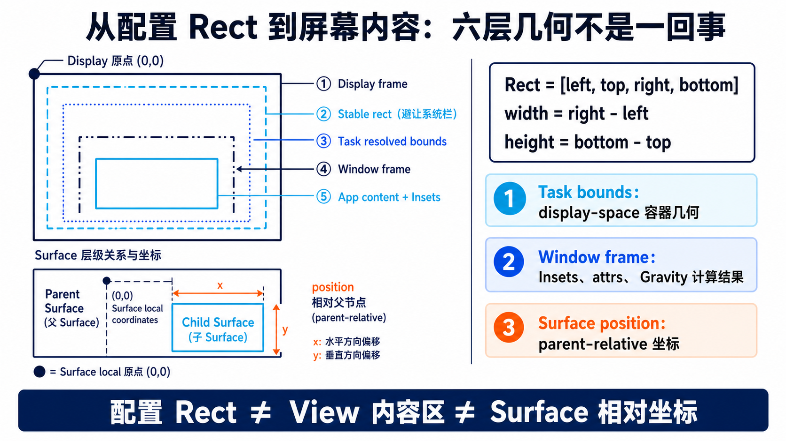
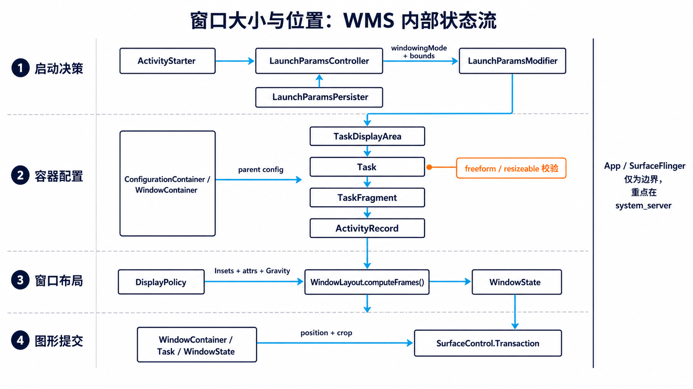
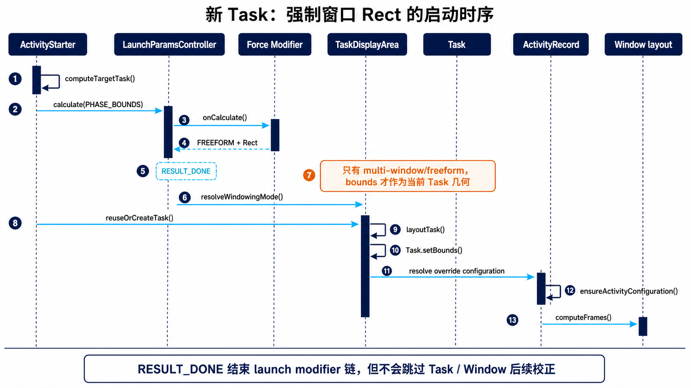
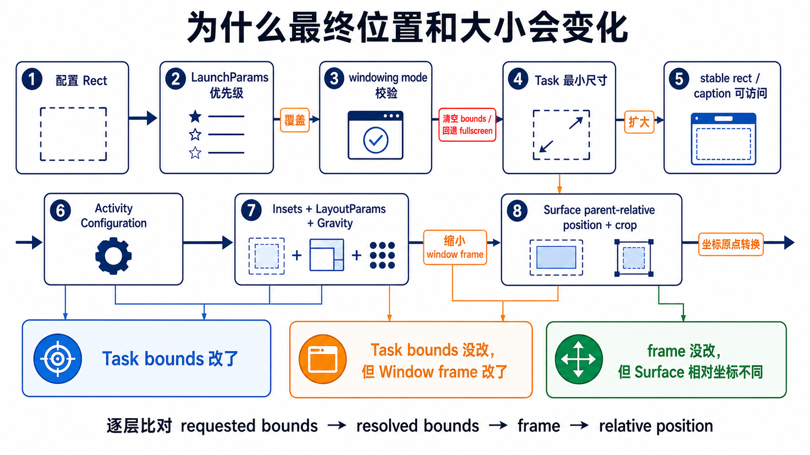

先给结论：你强制的是 Task 的候选容器几何
FREEFORM + Rect，LaunchParams 把它交给 Task；Task 先把 Rect 解析成有效的 Configuration，Window 再在 Task bounds 内按 Insets、LayoutParams 和 Gravity 计算 frame，最后把 display-space 坐标转换成父 Surface 的相对 position/crop。Task 不在 multi-window/freeform 时，当前 bounds 会被清空或只作为“上次非全屏位置”保存。
Task bounds 决定可用容器，但 Window frame 还会继续受 Insets、attrs、Gravity 和兼容缩放影响。
Task/Window frame 常用 display-space；SurfaceControl.position 则是 parent-relative。
因此，排查“大小或位置不准”时不能只看配置文件里的四个数。至少要同时观察 requested bounds、resolved bounds、WindowState frame、relFrame/surface position 和 App 侧 WindowMetrics + Insets。
ForceAppBoundsLaunchParamsModifier 和 RESULT_DONE 抢占启动参数，并定向放开 non-resizeable 校验。本文不重复贴完整 patch，专门解释它写入的值之后发生了什么。实现细节可对照 《指定 App 强制窗口大小和位置方案》。源码事实 表示可直接从固定提交的方法语义得出；工程推论 表示由多个源码点组合而成，文中会显式标注。
先分清六层几何：相同宽高，不同语义

Rect 的四个数不是 x/y/width/height
Android Rect(left, top, right, bottom) 的右、下是边界坐标，不是宽高。以 Rect(120, 200, 1320, 1000) 为例：
height = 1000 − 200 = 800 px
若配置层接受的是 x, y, width, height，写进 Rect 前必须转换成 [x, y, x + width, y + height]。这类解析错误发生在进入 WMS 之前，会让后面所有日志“逻辑一致但结果错误”。
bounds、appBounds、maxBounds
| 字段 | 语义 | 与强制 Rect 的关系 |
|---|---|---|
WindowConfiguration.bounds | 当前窗口容器的整体边界，可包含系统 Insets 覆盖区域。 | Task 最终要得到的 resolved bounds；App 的 current WindowMetrics 也从当前 Configuration 读取它。 |
appBounds | 向 App 报告 app width/height 的边界，层级较低的容器可继续覆盖。 | 不能用它替代 Task bounds；导航栏、兼容模式等可能让二者不同。 |
maxBounds | App 在当前设备/状态可预期的最大窗口范围。 | 用于 maximum WindowMetrics；不等于当前强制窗口大小。 |
Display frame 与 stable rect
DisplayContent.getStableRect() 用显示 frame 扣除 system bars Insets，而且计算时忽略系统栏当前是否可见。它表达“长期可安全放置窗口装饰”的区域，不等于当前内容区。Task 的 freeform 调整会参考 stable rect，尤其要保证 caption/标题栏仍可触达。
Task resolved bounds 仍是 display-space 容器边界；WindowState.mFrame 是窗口布局结果；mRelFrame 与 Surface position 则相对父容器。它们可能数值相同，但不是同一个状态。关键类图：谁拥有状态，谁负责变换

| 层次 | 关键类 | 对大小/位置的职责 | 不负责什么 |
|---|---|---|---|
| 启动决策 | ActivityStarter、LaunchParamsController、modifier、persister | 选择 display area/windowing mode；计算候选 launch bounds；恢复历史位置。 | 不直接计算 Window frame。 |
| 容器配置 | TaskDisplayArea、Task、TaskFragment、ActivityRecord | 校验 freeform 能力；把 requested override 与父配置合并；形成 resolved bounds 与 App Configuration。 | 不决定 View 的最终内容 Insets。 |
| 窗口布局 | DisplayPolicy、WindowLayout、WindowState | 用 Task/Window bounds、Insets、LayoutParams、requested size、Gravity 计算 display-space frame。 | 不重新决定 Activity 属于哪个 Task。 |
| 图形提交 | WindowContainer、Task、WindowState、SurfaceControl.Transaction | 把几何转换成父坐标下的 position、crop，并参与原子 Transaction。 | 不负责 App buffer 内容布局。 |
ConfigurationContainer 是中间骨架
Task、TaskFragment、ActivityRecord 都处在配置容器层级中。一个节点的完整 Configuration 不是简单复制 Rect，而是：
setBounds() 写的是 requested override。随后 resolveOverrideConfiguration() 可以依据父配置、模式、最小尺寸和兼容策略生成 resolved override，最后才合并为对该节点生效的 full configuration。空 Rect/null 的重要语义是“取消覆盖并继承父容器”。
启动阶段：FREEFORM + Rect 如何进入新 Task

RESULT_DONE 能截断 launch modifier 链，却不能跳过 Task 配置解析、Activity config 与 Window frame 计算。第一步：先判断是新建还是加入已有 Task
ActivityStarter.computeTargetTask() 先定位目标叶子 Task。典型的 FLAG_ACTIVITY_NEW_TASK 且没有 inTask、source Task 或可加入目标时，它返回 null，表示后续应创建新 Task；否则可能使用 source Task、显式 inTask 或 root Task 中已有叶子 Task。
随后 computeLaunchParams() 以 PHASE_BOUNDS 调用 LaunchParamsController.calculate()。这一阶段不只计算 Rect，还携带 preferred TaskDisplayArea 与 windowing mode。
第二步：modifier 是逆序执行的策略链
LaunchParamsController 先从 LaunchParamsPersister 读取历史值，再从“最后注册”的 modifier 向前遍历。这个顺序刻意让更靠近产品定制层的 modifier 先运行：
// 语义化伪代码；省略非关键参数
result = persistedLaunchParams
for modifier in reverse(registeredModifiers):
status, candidate = modifier.calculate(current = result)
if status == RESULT_SKIP: continue
if status == RESULT_CONTINUE: result = candidate
if status == RESULT_DONE: return candidate现有强制方案最后注册 ForceAppBoundsLaunchParamsModifier，命中目标包名后输出：
out.windowingMode = WINDOWING_MODE_FREEFORM
out.bounds = configuredRect
return RESULT_DONE所以它能覆盖持久化位置、ActivityOptions.launchBounds、manifest WindowLayout、source cascade 与平台默认 freeform 放置策略。代价也很明确：平台 TaskLaunchParamsModifier 里用于适配 display area、避让冲突的逻辑不会再运行。
第三步：模式校验是 Rect 的门禁
TaskDisplayArea.resolveWindowingMode() 会结合 display area 能力、全局 multi-window/freeform 开关、Activity/Task 支持情况校验请求模式。原生逻辑里，non-resizeable App 可能被 TaskLaunchParamsModifier 强制最大化并清空 bounds；ActivityRecord 与 TaskFragment 也各自做 multi-window 支持判断。
mBounds，却没有让 Task 真正进入有效的 multi-window/freeform。此时 Rect 可能只进入 mLastNonFullscreenBounds，或者在 fullscreen 解析中变成空 override，屏幕仍然铺满父容器。第四步：新 Task 在 layoutTask() 落地
Task.reuseOrCreateTask() 创建/复用叶子 Task 后调用 LaunchParamsController.layoutTask()。这里有决定性的条件：
if calculatedBounds.isEmpty():
return false
if task.inMultiWindowMode():
task.setBounds(calculatedBounds) // 当前几何
return true
task.setLastNonFullscreenBounds(calculatedBounds) // 仅恢复候选
return falseTask 里还有一道保护：内部 setBounds(existing, bounds) 在非 multi-window 模式下会把 bounds 转成 null。这就是“windowing mode 先于 Rect”的源码根因。
依据：computeTargetTask / computeLaunchParamsmodifier 逆序与 RESULT_DONEreuseOrCreateTask非 multi-window 清空 bounds
Task 内部：requested bounds 为什么还会变化
FREEFORM + Rect parent config
继承 min size
扩大 stable/caption
平移 resolved bounds
向下派发
fullscreen：空 bounds 代表“填满父容器”
Task.resolveLeafTaskOnlyOverrideConfigs() 先解析继承/覆盖后的 windowing mode。fullscreen 下主动使用空 bounds，让 Task 从父容器继承几何；非 fullscreen 才进入最小尺寸与 freeform 位置校正。所以不能把“Task.getBounds() 有显示大小”误解为“requested override 里一定有 Rect”——继承也能产生完整 bounds。
最小尺寸：可能扩大，且锚点不总是 left/top
adjustForMinimalTaskDimensions() 先看 manifest 指定的 minWidth/minHeight；未指定时，使用 display area 的默认最小 Task 尺寸并按父配置 density 从 dp 转成 px。Rect 太小时，Task 会扩大：
- 若原右边/下边贴住父 bounds，对应方向会保留 right/bottom，向左/上扩。
- 否则通常保留 left/top，向右/下扩。
这解释了为什么“配置 left/top 没变”并非总成立：靠右或靠底的窗口为了满足最小尺寸，可能移动左上角。
freeform 可见性：保证能拿回来，不保证完全在屏内
computeFreeformBounds() 先把父 bounds 与 display stable rect 求交，然后调用 fitWithinBounds()。该策略的目标不是强制整个窗口都包含在 stable rect 内，而是至少保留规定的可见宽高，并把顶部移动到 stable inset 以下，确保 caption/拖拽区域可访问。
LaunchParamsUtil.adjustBoundsToFitInDisplayArea() 完整收回 stable 区域；而一个以 RESULT_DONE 截断平台 modifier 的定制 Rect，之后仍会受 Task 自身的最小尺寸与 caption 可访问性约束，但不一定经历同一套 launch 冲突规避。移动与缩放在容器层就是不同事件
WindowContainer.onRequestedOverrideConfigurationChanged() 比较新旧 bounds：宽高改变走 onResize()，仅 left/top 改变走 onMovedByResize()。这影响后续 layout、Surface 更新与动画，但两者最终都来自同一个 requested override 配置入口。
依据：leaf Task override 解析最小尺寸调整freeform bounds 调整fit display area
Task resize 后，App 为什么会收到配置变化甚至重启
Task.resize() 不是单纯改 Surface
Task.resize() 在 window layout defer 区间中调用 setBounds()，然后让顶部 Activity 执行 ensureActivityConfiguration()，再重新评估可见性、resume 和 launching state。也就是说，Task 大小变化属于资源配置变化的一部分，会影响 screenWidthDp、screenHeightDp、orientation、smallest width 等派生字段。
ActivityRecord.ensureActivityConfiguration() 比较上次已上报配置和当前配置：
- App 声明处理相应
configChanges：通常调度 configuration changed。 - 存在 App 未处理的重大变化：可能 relaunch Activity。
- free resize/windowing-mode resize 场景会尽量保留 Window，减少闪烁，但不保证业务状态天然安全。
App 侧 WindowMetrics 看到什么
WindowMetricsController.getCurrentWindowMetrics() 从当前 Resources Configuration 的 WindowConfiguration.bounds 取当前 bounds，再单独向 WMS 查询该 bounds 对应的 WindowInsets。因此推荐的 App 侧理解是：
这不是一个简单固定减法：edge-to-edge、系统栏可见性、cutout、IME 与目标 SDK 都会改变 Insets 的消费方式。对 Framework 调试而言，先确认 WindowMetrics.bounds 是否等于预期 Task/Activity bounds，再看 Insets；不要把 View 根布局的 measured size 直接当成 WMS 配置 Rect。
px 与 dp：强制配置最好明确单位
WMS 的 Rect 是物理/逻辑显示坐标中的整数像素；App Configuration 常用 dp。若配置文件用 dp，应在目标 display 的 density 下转换；若配置用 px，则跨分辨率、density、外接显示器时不会保持相同视觉尺寸。
适合固定设备、车机、展陈屏；可精确对齐硬件区域，但依赖分辨率和 rotation。
更适合多设备；需要在选定 TaskDisplayArea 后换算，并明确旋转、safe area 与最小尺寸规则。
依据：Task.resizeensureActivityConfigurationcurrent WindowMetrics
从 Task bounds 到 Window frame，再到 Surface position
Window 布局入口：DisplayPolicy.layoutWindowLw()
布局时，DisplayPolicy 把以下输入交给 WindowLayout.computeFrames()：
WindowState.getBounds()：通常继承 Activity/Task 的容器 bounds；size-compat token 有特殊路径。InsetsState与 display cutout safe 区域。WindowManager.LayoutParams：width/height、x/y、margin、gravity、fitInsets、flags。- App 上报的 requested width/height、compat scale 与 windowing mode。
WindowLayout 先从 window bounds 扣出 fit Insets，形成 display frame/parent frame；再决定 w/h；最后用 Gravity.apply() 放进 parent frame。multi-window 中，普通 app window 的 w/h 还会被限制到 parent frame 以内。
// 语义化计算顺序
displayFrame = inset(windowBounds, fitInsets)
parentFrame = attached ? attachedFrame : displayFrame
(w, h) = resolve(attrs, requestedSize, compatScale, parentFrame)
if inMultiWindow: (w, h) = min((w, h), parentFrame.size)
frame = Gravity.apply(attrs.gravity, w, h, parentFrame, attrs.x, attrs.y)所以即便 Task bounds 完全等于配置 Rect，Window frame 仍可能因为状态栏/导航栏 Insets、非 MATCH_PARENT 的 attrs、dialog gravity 或 compat scale 而不同。
display-space frame 如何变成相对父 Surface 的位置
WindowState.setFrames() 保存 display-space mFrame，并用“窗口 frame 左上角减父容器 bounds 左上角”生成 mRelFrame。Surface 更新时，transformFrameToSurfacePosition() 再执行相同的父坐标变换，并处理 child window、global scale 与 surfaceInsets。
例如 Task 位于显示坐标 (120, 200)；其主窗口 frame 也从 (120, 200) 开始。Window Surface 若直接挂在 Task Surface 下，它的相对 position 通常接近 (0, 0)，而不是 (120, 200)。Task 自己的 Surface position 才负责表达它相对父容器的偏移。
position 与 crop 是两个属性
WindowContainer.updateSurfacePosition() 将 parent-relative 坐标写入 Transaction.setPosition()。对非 organized root Task，Task.updateSurfaceSize() 还会把 Task Surface crop 设置为 bounds 的 width/height；organized Task 的几何由 organizer/Shell 路径协同维护。
依据：layoutWindowLwcomputeFramestransformFrameToSurfacePositionTask surface crop
为什么最终值不同：按“哪一层变了”定位

| 观察结果 | 第一怀疑点 | 典型原因 | 验证字段 |
|---|---|---|---|
| requested bounds 就不对 | 配置解析 / modifier 命中 | Rect 语义、单位、包名/Activity 匹配、优先级错误。 | Force modifier 输入输出日志、mLaunchParams |
| requested 正确，resolved 为空/全屏 | windowing mode | freeform 不支持、non-resizeable 校验未放开、Task 实际继承 fullscreen。 | requestedOverrideWindowingMode、windowingMode |
| resolved bounds 变大或被平移 | Task config 解析 | 最小 Task 尺寸、stable rect、caption 可访问、旋转。 | requestedOverrideBounds vs getBounds() |
| Task bounds 正确，Window frame 变小 | WindowLayout | fitInsets、cutout、attrs width/height、Gravity、compat scale。 | mParentFrame、mDisplayFrame、mFrame |
| frame 正确，Surface 坐标看似不同 | 父坐标转换 | Task/Window Surface 层级、parent bounds、surfaceInsets、animation leash。 | mRelFrame、mSurfacePosition、layer tree |
| 首次正确，拖动/切换后改变 | 后写策略 | TaskOrganizer/WCT、桌面模式、用户 resize、持久化 restore。 | WCT change、mLastNonFullscreenBounds、WM trace |
新建、复用、运行时 resize：三个不同落点
| 场景 | 主要入口 | bounds 如何落地 | 强制策略注意点 |
|---|---|---|---|
| 新建 Task | reuseOrCreateTask() → layoutTask() | PHASE_BOUNDS 结果在新叶子 Task 上 setBounds()。 | 这是 launch modifier 最直接、最稳定的生效路径。 |
| 向已有 Task 压入 Activity | computeTargetTask() 找到 target Task | 会重新计算 launch params 和 preferred mode/display area，但没有天然等价于对已有 Task 调一次 resize()。 | 若要求“每次启动都重置位置”，必须显式识别复用 Task 并重设 bounds。 |
| 运行时调整 | Task.resize() 或 organizer 的 WindowContainerTransaction.setBounds() | 直接更新 requested override configuration，触发 client config、layout 与 Surface 更新。 | 它是 launch 之后的后写者，可以覆盖首次启动位置。 |
| 重启/恢复 | LaunchParamsPersister、mLastNonFullscreenBounds | 按 component/user/display 保存 freeform/fullscreen 启动状态；没有显式 override 时可恢复。 | 强制 modifier 的 RESULT_DONE 可压过持久化候选，但运行期保存仍会继续发生。 |
工程推论 若产品要求“目标 App 永远固定在某个 Rect”，仅做 launch modifier 属于一次性启动策略，不等于持续约束。用户拖动、DesktopMode/Shell 的 WCT、显示旋转/切换、Task 复用都可能在后续写入新 bounds。持续强制必须明确：
- 是否允许用户拖动/缩放；若允许，何时重新吸附。
- 是每次 Activity launch 重置，还是只在 Task 首次创建时设置。
- 旋转/换屏时保持 px、dp、比例还是相对 safe area 锚点。
- 是否覆盖
mLastNonFullscreenBounds的用户历史状态。
WindowContainerTransaction.setBounds() 把 Rect 写进 WindowConfiguration 并设置 bounds 配置掩码；WindowOrganizerController.applyChanges() 再把它合并到容器 requested override configuration，同时触发 client configuration effect。这与 launch modifier 最终会合在同一配置模型，但发生时间和优先级不同。
依据：WCT.setBoundsapplyChanges保存 launch params恢复 last non-fullscreen bounds
回看当前方案：合理的插入点与应补齐的边界
为什么应在 Task/Configuration 层强制，不应硬改 Window frame
窗口大小和位置是 Activity 资源配置、Insets、输入窗口、Surface crop 与 Task 管理共同依赖的真值。把强制策略放在 LaunchParams/Task bounds 层，后续所有模块能从同一 Configuration 派生；若在 WindowState.mFrame 或 Surface position 阶段硬改，只改变视觉几何，会制造以下不一致：
- App 收到的 WindowMetrics/Configuration 仍是旧尺寸，View 按错误宽高测量。
- Insets、触摸命中、输入窗口与可见 layer 位置可能不一致。
- Task crop、动画 leash、过渡 start/end bounds 与窗口 frame 分离。
- 下一轮 layout 会重新按容器真值计算，硬改结果容易被覆盖。
建议把策略拆成四个明确职责
| 职责 | 建议位置 | 输入/输出 | 失败时日志 |
|---|---|---|---|
| 目标识别与 Rect 解析 | ForceAppBoundsConfig | component/package/display/rotation → 规范化 Rect | 原始值、单位、转换后 Rect、拒绝原因 |
| 启动候选 | ForceAppBoundsLaunchParamsModifier | FREEFORM + bounds + TaskDisplayArea | phase、target Task、新建/复用、RESULT |
| 能力定向放开 | ActivityRecord/TaskFragment 支持判断附近 | 仅目标 app 返回可进入 multi-window | 原 resizeMode、min dimensions、命中规则 |
| 复用/运行时策略 | Task 复用分支或 organizer/WCT 策略层 | 已有 taskId → 是否 reassert bounds | 旧/新 requested、resolved、触发原因 |
工程推论 最好把“一次性启动位置”和“持续固定位置”做成两个配置选项。前者尊重用户后续操作；后者才监听/拦截后写路径。二者若混在 modifier 中，代码很难解释“为什么第一次生效、第二次没回去”。
源码调试手册：按状态层逐级收敛
建议日志字段
component=... taskId=... displayId=... reason=launch|reuse|wct|resize
configuredRect=[l,t][r,b] unit=px density=...
launchMode=FREEFORM launchBounds=... modifierResult=RESULT_DONE
requestedMode=... resolvedMode=...
requestedBounds=... resolvedBounds=... appBounds=... maxBounds=...
windowFrame=... parentFrame=... displayFrame=... relFrame=...
surfacePosition=(x,y) taskCrop=(w,h) insets=...推荐观察顺序
- 确认 modifier 命中。包名/component、phase、输出 Rect 和
RESULT_DONE。 - 确认模式。Task requested/resolved windowing mode 是否真为 freeform；全局和 display area 是否支持。
- 确认 Task 两套 bounds。requested override 与
Task.getBounds()是否第一次出现差异。 - 确认 Activity config。App 是否收到新 bounds/dp，是否发生 relaunch。
- 确认 Window frames。
parentFrame/displayFrame/frame/relFrame；同时看 attrs 与 Insets。 - 最后看 layer。Task/Window Surface 的父子关系、position/crop、动画 leash 是否改变坐标参照。
adb shell dumpsys activity containersadb shell dumpsys activity activities
adb shell dumpsys window windowsadb shell dumpsys window displays
启用 Window Manager tracing，比较 launch、first layout、transition finish、用户 resize 四个时间点。
只有当 WMS frame 正确而画面仍错位时，再对照 SurfaceFlinger layer tree 的 parent、position 与 crop。
Force modifier.onCalculate、LaunchParamsController.layoutTask、Task.setBounds、Task.resolveLeafTaskOnlyOverrideConfigs；确认 Task 几何后再断 DisplayPolicy.layoutWindowLw、WindowLayout.computeFrames 和 WindowState.transformFrameToSurfacePosition。不要从 SurfaceFlinger 反向猜配置层。关键源码阅读地图与版本边界
platform/frameworks/base 提交 1cdfff555f4a21f71ccc978290e2e212e2f8b168。DesktopMode、TaskOrganizer、Insets 与兼容策略在不同 Android 分支变化较快，移植时应以目标分支的方法语义为准，不应只套用本文行号。| 阅读目标 | 文件 / 方法 | 核心问题 |
|---|---|---|
| 三种 bounds 语义 | WindowConfiguration | 当前、App、最大边界分别是什么。 |
| modifier 优先级 | LaunchParamsController.calculate | 持久化值与 modifier 如何合并，RESULT_DONE 做什么。 |
| 平台 launch 规则 | TaskLaunchParamsModifier.calculate | Options、manifest、source、默认尺寸和冲突规避的优先级。 |
| freeform 能力 | TaskDisplayArea | 请求模式为何会回退。 |
| Task bounds 解析 | Task.resolveLeafTaskOnlyOverrideConfigs | fullscreen、最小尺寸、freeform 可见性如何改变 Rect。 |
| 配置传播 | ConfigurationContainer | requested、resolved、full config 如何形成。 |
| Window frame | WindowLayout.computeFrames | Insets、attrs、Gravity 如何改变窗口 frame。 |
| Surface 坐标 | WindowState.transformFrameToSurfacePosition | display-space 如何变成 parent-relative。 |
| 运行时 WCT | WindowOrganizerController.applyChanges | Shell/organizer 后写 bounds 如何回到同一配置模型。 |
| App 侧观测 | WindowMetricsController | App 当前 bounds 与 Insets 从哪里来。 |
最终心智模型：LaunchParams 决定“想把 Task 放哪”；Configuration/Task 决定“这个想法在当前层级是否合法”；WindowLayout 决定“窗口在容器里怎么排”；SurfaceControl 决定“这些几何以什么父坐标和裁剪提交”。只要按这四层逐级对比，强制窗口大小与位置就不再是黑盒。